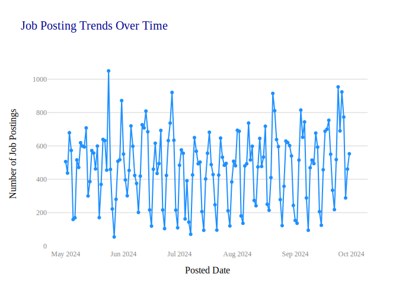
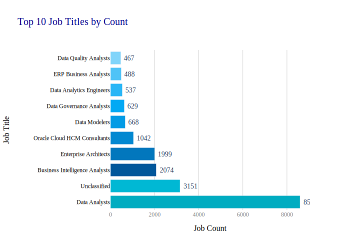
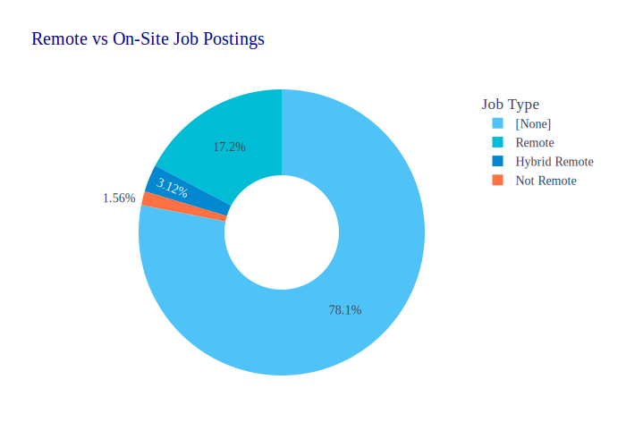
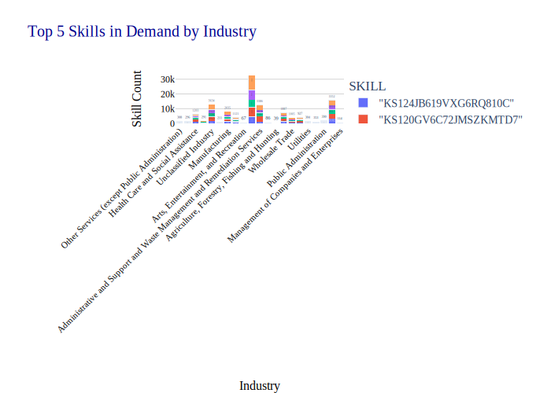
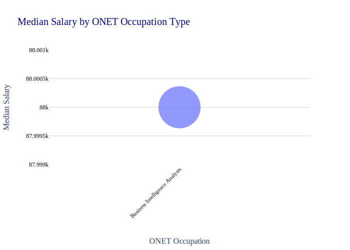
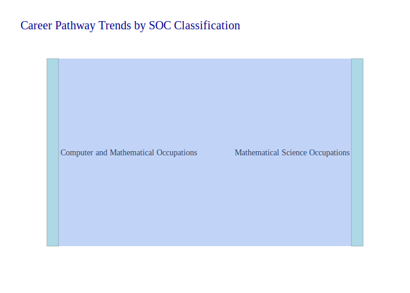

Module 04: Lab 01
Visual Reporting and Storytelling
Objectives
By the end of this lab, you will: 1. Load and analyze the Lightcast dataset in Spark DataFrame. 2. Create five easy and three medium-complexity visualizations using Plotly. 3. Explore salary distributions, employment trends, and job postings. 4. Analyze skills in relation to NAICS/SOC/ONET codes and salaries. 5. Customize colors, fonts, and styles in all visualizations (default themes result in a 2.5-point deduction). 6. Follow best practices for reporting on data communication.
Step 1: Load the Dataset
1 Salary Distribution by Employment Type
- Identify salary trends across different employment types.
- Filter the dataset
- Remove records where salary is missing or zero.
- Aggregate Data
- Group by employment type and compute salary distribution.
- Visualize results
- Create a box plot where:
- X-axis =
EMPLOYMENT_TYPE_NAME - Y-axis =
SALARY_FROM
- X-axis =
- Customize colors, fonts, and styles to avoid a 2.5-point deduction.
- Create a box plot where:
- Explanation: Write two sentences about what the graph reveals.

The box plot shows clear differences in starting salaries by employment type. Full-time employment (≥ 32 hours) possesses higher median wages and greater range, suggesting greater earning ability and variability. Part-time employment, particularly with fewer than or equal to 32 hours, suggests lower and more restricted salary distributions, suggesting more stable lower pay.
2 Salary Distribution by Industry
- Compare salary variations across industries.
- Filter the dataset
- Keep records where salary is greater than zero.
- Aggregate Data
- Group by NAICS industry codes.
- Visualize results
- Create a box plot where:
- X-axis =
NAICS2_NAME - Y-axis =
SALARY_FROM
- X-axis =
- Customize colors, fonts, and styles.
- Create a box plot where:
- Explanation: Write two sentences about what the graph reveals.

The box plot reveals tremendous variation in starting salaries across industries. Professional, Scientific, and Technical Services and Finance and Insurance are industries that, on average, have higher median starting salaries because of the high level of skills demanded in these occupations and paid for in these occupations. Accommodation and Food Services and Arts, Entertainment, and Recreation are industries that have lower and more spread-out salary distributions, which represent more balanced and lower aggregate pay.
3 Job Posting Trends Over Time
- Analyze how job postings fluctuate over time.
- Aggregate Data
- Count job postings per posted date (
POSTED).
- Count job postings per posted date (
- Visualize results
- Create a line chart where:
- X-axis =
POSTED - Y-axis =
Number of Job Postings
- X-axis =
- Apply custom colors and font styles.
- Create a line chart where:
- Explanation: Write two sentences about what the graph reveals.

The line graph illustrates the daily fluctuation of job postings from May to October 2024. Overall, the trend reflects periodic highs and lows, which can be suggestive of cyclical recruitment patterns, i.e., recruitment campaigns, weekends, or holiday periods. Dominant peaks in postings can virtually undoubtedly be credited to planned hiring campaigns, while troughs can indicate times of laggings in the job market.
4 Top 10 Job Titles by Count
- Identify the most frequently posted job titles.
- Aggregate Data
- Count the occurrences of each job title (
TITLE_NAME). - Select the top 10 most frequent titles.
- Count the occurrences of each job title (
- Visualize results
- Create a bar chart where:
- X-axis =
TITLE_NAME - Y-axis =
Job Count
- X-axis =
- Apply custom colors and font styles.
- Create a bar chart where:
- Explanation: Write two sentences about what the graph reveals.

The bar graph shows that “Data Analysts” is the most job title posted by far, at over 8,500 postings, an indication of the high and steady demand for data professionals. Other top-ranking roles are “Business Intelligence Analysts” and “Enterprise Architects,” which signifies that firms are looking at data infrastructure, analysis, and planning strategically in the process of recruiting.
5 Remote vs On-Site Job Postings
- Compare the proportion of remote and on-site job postings.
- Aggregate Data
- Count job postings by remote type (
REMOTE_TYPE_NAME).
- Count job postings by remote type (
- Visualize results
- Create a pie chart where:
- Labels =
REMOTE_TYPE_NAME - Values =
Job Count
- Labels =
- Apply custom colors and font styles.
- Create a pie chart where:
- Explanation: Write two sentences about what the graph reveals.

The pie chart shows that most job postings (over 78%) do not specify whether the job is remote or on-site, which may be due to variations in job posting standards. Of those listings that do specify, remote and hybrid jobs combined account for around 20%, indicating a rising proportion of flexible work arrangements in the market.
6 Skill Demand Analysis by Industry (Stacked Bar Chart)
- Identify which skills are most in demand in various industries.
- Aggregate Data
- Extract skills from job postings.
- Count occurrences of skills grouped by NAICS industry codes.
- Visualize results
- Create a stacked bar chart where:
- X-axis =
Industry - Y-axis =
Skill Count - Color =
Skill
- X-axis =
- Apply custom colors and font styles.
- Create a stacked bar chart where:
- Explanation: Write two sentences about what the graph reveals.

The stacked bar chart highlights the distribution of skill demand across various industries. It shows that Professional, Scientific, and Technical Services and Administrative and Support Services are the top two industries with the highest volume of skill mentions, indicating a broad and intensive requirement for skilled labor in those sectors.
7 Salary Analysis by ONET Occupation Type (Bubble Chart)
- Analyze how salaries differ across ONET occupation types.
- Aggregate Data
- Compute median salary for each occupation in the ONET taxonomy.
- Visualize results
- Create a bubble chart where:
- X-axis =
ONET_NAME - Y-axis =
Median Salary - Size = Number of job postings
- X-axis =
- Apply custom colors and font styles.
- Create a bubble chart where:
- Explanation: Write two sentences about what the graph reveals.

The bubble chart displays salary data for one ONET occupation type, “Business Intelligence Analysts,” reporting minimal available data in the database. While the chart shows a mean salary of roughly $88,000 for this job, the absence of other occupation categories makes it difficult to compare salary trends within the overall job market.
8 Career Pathway Trends (Sankey Diagram)
- Visualize job transitions between different occupation levels.
- Aggregate Data
- Identify career transitions between SOC job classifications.
- Visualize results
- Create a Sankey diagram where:
- Source =
SOC_2021_2_NAME - Target =
SOC_2021_3_NAME - Value = Number of transitions
- Source =
- Apply custom colors and font styles.
- Create a Sankey diagram where:
- Explanation: Write two sentences about what the graph reveals.

Based on the Sankey diagram, there is a direct path from Computer and Mathematical Occupations to Mathematical Science Occupations with no flows in between. This would entail a highly specialized career trajectory within the dataset, where experts in overall computing roles might specialize further into mathematical science roles.